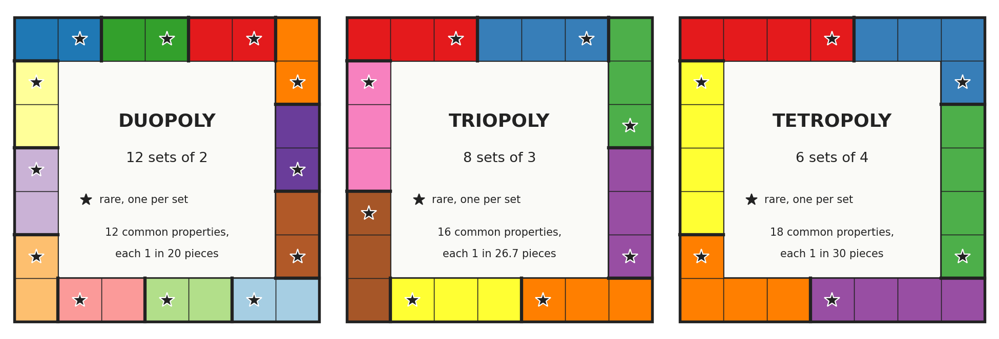
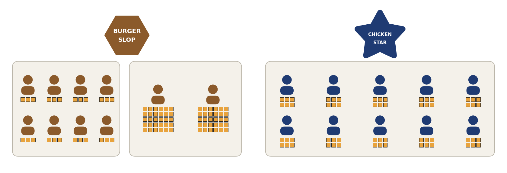

The fictional Acme Insurance Corp employs a team of recreational mathematicians, people who study the fun parts of math (game theory, combinatorics, and cryptography), and puts them to work as actuaries. They take the most entertaining problems in mathematics and turn them into dry, boring actuarial tables.
This week, two fast food chains want Acme to insure the prizes in their collect-the-set contests. Burger Slop and Chicken Star will each print ten million game pieces, and almost none of them will win anything big. When a customer completes a set, Acme pays the prize. Each chain is choosing among three versions of its game, so Acme needs to know how much it should expect to pay out for each version, and which version it would rather insure.
Throughout, we assume that no prize is ever stolen. The theft section near the end asks what happens when that assumption fails.
The problem is small enough to solve on paper, and solving it turns up three nuggets:
- Collecting a set is a coupon collector problem where one coupon is tens of thousands of times rarer than the others.
- The player holding a rare piece is not a typical player, because a player with more pieces is more likely to hold it. Treating them as typical can underprice a game by a factor of about three.
- All the information needed to check a code is contained in the code itself.
The Contests
Burger Slop's and Chicken Star's games work the same way. Each game piece shows one property on a game board, printed in its set's color, and a 14-character code. The properties are grouped into sets, and a player who holds a piece of every property in a set wins that set's prize by entering the pieces' codes online. Each code counts once, for the first player to enter it. Each set has one rare property and some common ones. "Common" here means plentiful: each common property is printed hundreds of thousands of times, while only as many pieces carry the rare property as the set has prizes.
All three versions of the game use a board of 24 properties, split into sets of \(k\) properties: one rare and \(k-1\) common.
| game | \(k\) | sets |
|---|---|---|
| duopoly | 2 | 12 |
| triopoly | 3 | 8 |
| tetropoly | 4 | 6 |

Each chain prints \(N = 10^7\) pieces. Each prize is one rare piece: 200 prizes of $1,000, 20 of $25,000 and one grand prize of $1,000,000, for $1.7 million in all. Common pieces make up 60% of the pieces, and the rest carry no property.
The board's 24 properties make \(24/k\) sets, each with \(k-1\) common properties: 12 common properties in duopoly (12 sets of 1), 16 in triopoly (8 sets of 2) and 18 in tetropoly (6 sets of 3). They split the 60% equally, so each common property has frequency
which is 1 in 20 for duopoly, 1 in 26.7 for triopoly and 1 in 30 for tetropoly.
The contests run six weeks, and half the pieces go to people who never enter a code. The rest go to players, and here the chains differ. At Burger Slop, 80% of players buy little and collect 3 pieces over the contest, and the other 20%, the heavy players, buy a lot and collect 30. At Chicken Star, every player collects one piece a week, so 6 over the six-week contest. That makes about 600,000 players at Burger Slop and 830,000 at Chicken Star. Each piece is an independent random draw from the printed pieces, players do not trade, and finding a rare piece does not change how many more pieces a player collects.
A Skewed Coupon Collector
In the classical coupon collector problem, each draw is uniform over \(k\) coupons, and collecting all \(k\) takes \(k H_k\) draws on average, where \(H_k = 1 + \tfrac{1}{2} + \cdots + \tfrac{1}{k}\) is the \(k\)-th harmonic number, which grows like \(\ln k\). These coupons are about as far from uniform as coupons get.
Model each piece a player receives as an independent draw from the \(N\) printed pieces. A set \(S\) has one rare piece and \(k-1\) common pieces. Let \(m_S\) be the number of prizes for \(S\). The rare piece is printed \(m_S\) times, so a draw is the rare piece with probability
There are 221 prizes in all. Even a set that held every one of them would have \(\epsilon_S = 221/10^7\), so its rare piece would turn up once in \(10^7/221 = 45{,}249\) draws on average. A real set has fewer prizes, so its rare piece is scarcer and the wait is longer. This is the same in every game, because it depends only on how often the rare piece is printed.
Let \(T_S\) be the number of draws until a player holds all \(k\) pieces of \(S\), \(T_R\) the number until the rare piece, and \(T_C\) the number until all \(k-1\) common pieces. A player holds the set once they hold both, so \(T_S = \max(T_R, T_C)\) and \(T_R \le T_S \le T_R + T_C\). Averaging,
The last term is the average wait for the common pieces, and this is where the games differ:
- Duopoly: one common piece per set, turning up 1 draw in 20. It takes 20 draws on average.
- Triopoly: two common pieces, each 1 in 26.7. Either one will do for the first, so the first turns up twice as fast, after \(26.7/2 = 13.3\) draws. The second takes another 26.7, for 40 in all.
- Tetropoly: three common pieces, each 1 in 30. The first takes \(30/3 = 10\) draws, the second another \(30/2 = 15\), and the last another 30, for 55 in all.
Each total is \(E[T_C] = H_{k-1} \times (1/p)\), where \(1/p\) is the wait for one particular common piece: \(1 \times 20 = 20\), \(1.5 \times 26.7 = 40\) and \(1.83 \times 30 = 55\). So the common pieces add 20 to 55 draws to a wait of at least 45,249 for the rare piece. The rare piece's wait is more than 800 times longer, in every game. The 20 to 55 draws are an upper limit, because players collect the common pieces while they wait for the rare one and almost always have them all by the time it shows up.
So the wait for any set is at least 45,249 draws, and all of it is spent waiting for the rare piece. No player waits that long, though: players collect 3 to 30 pieces. What the rest of the post uses is the same fact for a fixed number of draws. Draws are independent, so finding the rare piece says nothing about a player's other pieces, and the player completes the set exactly when those include every common property.
One Number
A prize is paid only if its rare piece is redeemed, so everything the actuary needs comes down to one number: \(q\), the probability that a given rare piece is redeemed. That takes two things. The piece has to go to a player, which happens with probability 1/2. And that player's other pieces have to include all \(k-1\) common properties of its set.
Size Bias
In the figure, each person is 10% of a chain's players and each square is one game piece over the six-week contest.

The naive move is to take a typical Burger Slop player and ask how often their other pieces complete the set. But the rare piece does not go to a typical player. Every piece is equally likely to be the rare one, so a player with 30 pieces is ten times as likely to hold it as a player with 3. This is the inspection paradox.
Let \(X\) be the number of pieces a random player collects, so \(\Pr(X = n)\) is the fraction of players who collect \(n\) pieces. At Burger Slop, \(\Pr(X = 3) = 0.8\) and \(\Pr(X = 30) = 0.2\). At Chicken Star, \(\Pr(X = 6) = 1\). Weighting each player by their number of pieces, the holder of a rare piece received \(n\) pieces with probability
The factor \(n\) is the weighting, and dividing by \(E[X]\), the average number of pieces per player, makes the probabilities add up to 1. How much this changes the answer depends on how unevenly the pieces are spread among a chain's players, and the two chains are opposites.
At Burger Slop the spread is wide. The average player collects
pieces, and the holder of a rare piece is a heavy player with probability \(0.2 \cdot 30 / 8.4 = 0.714\). Heavy players are 20% of players but hold 71% of the rare pieces. Averaging \(n\) with these weights, the holder of a rare piece has \(E[X^2]/E[X] = 22.3\) pieces, against 8.4 for a typical player.
At Chicken Star there is no spread. Every player collects 6 pieces, so \(E[X] = 6\), and the holder received 6 pieces with probability \(6 \cdot 1 / 6 = 1\). The holder of a rare piece is a typical player, and the naive answer is exact.
Collecting the Commons
The holder of a rare piece wins only if their other pieces include every common property of its set. Write \(P_k(r)\) for the chance that \(r\) draws include all \(k-1\) common properties of a set, each of frequency \(p\).
In duopoly there is one common property. A draw misses it with probability \(1-p\), so \(r\) draws all miss it with probability \((1-p)^r\), and
With two or more common properties, subtracting the chance of missing each one subtracts too much: draws that miss two properties at once get subtracted twice. Inclusion-exclusion, the same tool as in Enumeration Solitaire, adds those back, then corrects for draws that miss three, and so on. A run of \(r\) draws misses a given group of \(a\) properties with probability \((1-ap)^r\), so for triopoly and tetropoly
Putting the pieces together gives the one number. A rare piece reaches a player with probability 1/2, its holder collected \(n\) pieces with the size-bias weight \(n \Pr(X = n) / E[X]\), and the holder's other \(n - 1\) pieces include every common property with probability \(P_k(n-1)\). Summing over \(n\) gives
Now put in Burger Slop's numbers. A heavy player collects 30 pieces, so a heavy player holding a rare piece has 29 others. They include the commons the player needs with probability \(P_k(29)\): 0.77 in duopoly, 0.44 in triopoly and 0.24 in tetropoly. A light player collects 3 pieces, so a light player holding a rare piece has only 2 others. They include the commons with probability \(P_k(2)\): 0.10 in duopoly, under 0.003 in triopoly, and never in tetropoly, which needs three.
With the weights 0.286 and 0.714 from the size bias section, the formula for Burger Slop is
| game | \(q\) | \(q\) without size bias | \(q\) simulated |
|---|---|---|---|
| duopoly | 0.290 | 0.116 | 0.293 ± 0.004 |
| triopoly | 0.159 | 0.046 | 0.156 ± 0.004 |
| tetropoly | 0.084 | 0.024 | 0.082 ± 0.003 |
The middle column uses a typical player's weights, 0.8 and 0.2, in place of 0.286 and 0.714. The simulation deals pieces to players and counts the rare pieces that end up in completed sets. It agrees with the formula, and not with the middle column. Ignoring size bias underprices every Burger Slop game by a factor of 2.5 to 3.5.
Bigger sets lower \(q\) twice over: the holder must find more common properties, and each is scarcer, because more of them share the same 60% of the pieces.
Chicken Star
At Chicken Star the holder of a rare piece has 5 other pieces, so
| game | Burger Slop | Chicken Star |
|---|---|---|
| duopoly | 0.290 | 0.113 |
| triopoly | 0.159 | 0.013 |
| tetropoly | 0.084 | 0.001 |
Chicken Star's \(q\) is lower in every game, and far lower in the bigger ones: with 5 other pieces, a holder rarely finds all three common properties of a tetropoly set.
Contest Length
The formula for \(q\) never mentions how long the contest runs. A set counts if its holder has every piece by the end, so what matters is how many pieces a player collects, not when they collect them.
At Burger Slop, say light players collect 0.5 pieces a week and heavy players 5. Over \(w\) weeks they collect \(0.5w\) and \(5w\) pieces, whole numbers for contests of 4, 6 and 8 weeks, and
The weights are still 0.286 and 0.714, because both rates scale with \(w\). At six weeks this is the \(q\) from before, with 3 and 30 pieces.
Whether the length cancels out depends on how the chain prints. If it prints a fixed run of \(N\) pieces and runs the contest until they are gone, it does: \(N\) and the number of customers set the pieces per player, and \(w\) drops out. If it prints for the length of the contest, it does not: at the same buying rates, players collect more pieces in a longer contest, with the same 221 prizes.
Here is Burger Slop's \(q\) at four, six and eight weeks:
| game | 4 weeks | 6 weeks | 8 weeks | ratio, 8 to 4 |
|---|---|---|---|---|
| duopoly | 0.230 | 0.290 | 0.329 | 1.4 |
| triopoly | 0.093 | 0.159 | 0.214 | 2.3 |
| tetropoly | 0.035 | 0.084 | 0.138 | 3.9 |
Stretching the contest from four weeks to eight multiplies duopoly's \(q\) by 1.4 and tetropoly's by 3.9.
At Chicken Star every player collects one piece a week, so over a contest of \(w\) weeks each player collects exactly \(w\) pieces, and
| game | 4 weeks | 6 weeks | 8 weeks | ratio, 8 to 4 |
|---|---|---|---|---|
| duopoly | 0.071 | 0.113 | 0.151 | 2.1 |
| triopoly | 0.004 | 0.013 | 0.024 | 6.0 |
| tetropoly | 0.0001 | 0.0010 | 0.0032 | 29 |
Chicken Star's \(q\) is far more sensitive to the length than Burger Slop's. Its players hold too few pieces to finish a big set, so each extra week raises their chances by a large factor: from four weeks to eight, tetropoly's \(q\) grows 29-fold.
Expected Payout
If Acme Insurance Corp takes on a contest, it pays every prize that is won. Each prize is won with probability \(q\), so the prize money Acme expects to pay out is \(q\) times the $1.7 million at stake. The premium Acme would charge the chain starts from this expected payout and adds a margin for overhead and profit; this post stops at the expected payout.
Because \(q\) depends on how long the contest runs, so does the expected payout. Here it is for contests of four, six and eight weeks.
At Burger Slop:
| game | \(q\), 4 weeks | payout, 4 weeks | \(q\), 6 weeks | payout, 6 weeks | \(q\), 8 weeks | payout, 8 weeks |
|---|---|---|---|---|---|---|
| duopoly | 0.230 | $390k | 0.290 | $494k | 0.329 | $560k |
| triopoly | 0.093 | $158k | 0.159 | $270k | 0.214 | $365k |
| tetropoly | 0.035 | $60k | 0.084 | $143k | 0.138 | $235k |
At Chicken Star:
| game | \(q\), 4 weeks | payout, 4 weeks | \(q\), 6 weeks | payout, 6 weeks | \(q\), 8 weeks | payout, 8 weeks |
|---|---|---|---|---|---|---|
| duopoly | 0.071 | $121k | 0.113 | $192k | 0.151 | $256k |
| triopoly | 0.004 | $6.9k | 0.013 | $21k | 0.024 | $42k |
| tetropoly | 0.0001 | $190 | 0.0010 | $1.7k | 0.0032 | $5.4k |
The expected payout holds only for a contest of a stated length, so Acme's policy should state the length.
The expected payout is not what Acme will actually pay. Two rare pieces almost never share a holder, so the prizes are paid nearly independently, and the grand prize is most of the money. The payout is mostly one coin flip.
At Burger Slop, the 220 smaller prizes are expected to cost $203k in duopoly. So duopoly pays about $203k with probability 0.71, and about $1.2M with probability 0.29, when the grand prize is won too. Tetropoly's smaller prizes are expected to cost $59k, so it pays about $59k with probability 0.916 and about $1.06M with probability 0.084. Chicken Star's tetropoly pays the grand prize with probability 0.001, and its smaller prizes are expected to cost $700 in all.
Sensitivity
Every \(q\) above rests on a guess about how many pieces players collect. What matters to Acme is how far a wrong guess would leave its expected payout too low. So that the guesses can be compared, each one is moved by the same amount, a third.
At Burger Slop the main guess is the figure of 30 pieces per heavy player. Here is \(q\) if the true figure is a third lower or higher:
| game | \(q\) at 20 | \(q\) at 30 | \(q\) at 40 | ratio, 40 to 20 |
|---|---|---|---|---|
| duopoly | 0.213 | 0.290 | 0.344 | 1.6 |
| triopoly | 0.082 | 0.159 | 0.230 | 2.8 |
| tetropoly | 0.031 | 0.084 | 0.149 | 4.8 |
Bigger sets are more sensitive. Let \(\lambda = pr\), the expected number of copies of one common property in \(r\) draws. Replacing each \((1-ap)^r\) in \(P_k(r)\) by \(e^{-a\lambda}\) gives \(P_k(r) \approx (1 - e^{-\lambda})^{k-1}\), so a 1% error in \(r\) moves \(P_k\) by about
percent. The fraction falls from 1 toward 0 as \(\lambda\) grows, since extra draws help less once a player probably holds each common property, and the factor \(k-1\) counts the common properties that must all turn up. For a heavy player's 29 other pieces this is 0.44% in duopoly, 1.1% in triopoly and 1.8% in tetropoly.
In dollars, here is how much each expected payout would be too low if a guess is a third too low. A third more pieces for every player is the eight-week contest from the contest length section.
| a third too low | chain | duopoly | triopoly | tetropoly |
|---|---|---|---|---|
| heavy players' pieces (40, not 30) | Burger Slop | $91k | $121k | $110k |
| every player's pieces (eight weeks, not six) | Burger Slop | $66k | $94k | $92k |
| every player's pieces (8, not 6) | Chicken Star | $64k | $20k | $3.7k |
Actuary Recommendation
Acme prefers the game whose expected payout is off by the fewest dollars when a guess about the players is a third too low. The coin flip does not enter: across the many contests Acme insures, the flips average out, but a wrong guess about players is wrong in every contest priced with it.
With no theft, insure duopoly at Burger Slop and tetropoly at Chicken Star.
At Burger Slop, tetropoly has the lowest expected payout, $143k against duopoly's $494k, but the heavy players make the bigger games' prices hard to pin down. If players collect a third more pieces than guessed, Acme's expected payout for duopoly is too low by $66k to $91k, and for the bigger games by $92k to $121k. Duopoly costs the most, and its cost is known best.
At Chicken Star, with 6 pieces each, almost nobody completes a tetropoly set. Its expected payout is $1,700, and 8 pieces per player would add $3,700 to it. Tetropoly is both the cheapest game and the one whose cost is known best.
Codes That Check Themselves
Strip away the paper and the contest is codes and an oracle: each piece's 14-character code is a token, and the server is an oracle that says whether a code is valid and what it wins. Forgery means making up a valid code. Theft means taking one that already exists. Acme insures a contest only if the chain uses Acme's codes, which make forgery hopeless and can be checked without a stored list of valid codes.
A code is 14 characters over 32 symbols (A-Z and 0-9, minus the look-alikes 0, O, 1 and I), so it is a 70-bit number, an element of \(D = \{0, 1, \dots, 2^{70}-1\}\).
The chain's market is split into 100 zones of equal population. Zone \(z\) gets \(N_z = 10^5\) pieces, and its piece \(i\), for \(i = 0, 1, \dots, N_z - 1\), gets the index \(j = z N_z + i\), so the indices run from 0 to \(N - 1\). A small table per zone says which property each \(i\) carries, with the zone's rare pieces at the lowest \(i\).
Acme holds one secret key, and \(\pi\) is a published format-preserving cipher on \(D\) under that key: a permutation of \(D\) that looks random to anyone without the key. Format-preserving means it turns a 70-bit number into another 70-bit number, so the result still fits in 14 characters. Piece \(j\) gets the code \(\pi(j)\).
To check a code \(y\), the server decrypts it to \(j = \pi^{-1}(y)\). If \(j < N\), the code is piece \(i = j - z N_z\) of zone \(z = \lfloor j / N_z \rfloor\); the server reads its property from that zone's table and marks \(j\) as redeemed. Otherwise the code is rejected.
Forgery. Without the key, a guessed code decrypts to an essentially uniform element of \(D\). It passes as a printed piece with probability
and as a rare piece with probability \(221 / 2^{70} \approx 1.9 \times 10^{-19}\). The index uses \(\log_2 N \approx 23.3\) of the code's 70 bits, and the other 46.7 bits act as an authentication tag. Forgery is not worth pricing.
The codes do nothing against theft, which the theft section takes up.
Theft
Every expected payout above assumes nobody steals a prize. A thief always redeems what they steal, so for a stolen piece \(q\) becomes 1, as it does for a holder who keeps buying until they have the commons. A stolen grand prize costs the full $1 million instead of \(q\) times $1 million, so it adds \((1 - q)\) times $1 million to the expected payout:
| game | Burger Slop | Chicken Star |
|---|---|---|
| duopoly | $710k | $887k |
| triopoly | $841k | $987k |
| tetropoly | $916k | $999k |
Duopoly's expected payout misses by the least. At Burger Slop this agrees with the answer without theft. At Chicken Star, let \(\theta\) be the probability that the grand prize is stolen. With 8 pieces per player, not 6, duopoly's expected payout is too low by $64k + \(\theta\) × $887k and tetropoly's by $3.7k + \(\theta\) × $999k, so duopoly is the better game once \(\theta\) is above 0.54.
The codes cannot prevent a theft; they only stop forgery. Preventing theft takes physical and digital security: chain of custody for the printed pieces, and protection for the oracle and its key, since a leaked key exposes every rare code. After a theft, the zone a code decrypts to can flag a suspicious claim, such as a rare code from one zone redeemed with common codes from another.
Summary
When one coupon is tens of thousands of times rarer than the rest, the expected wait for the whole set is the wait for that coupon, and holding the others does not make it any likelier to turn up.
The holder of a rare piece is not a typical player, because choosing a person through something they hold weights each person by how much they hold. This is the inspection paradox. At Burger Slop it is worth a factor of about three in price. At Chicken Star, where every player holds the same number of pieces, it is worth nothing.
Encrypting the piece index with a format-preserving cipher makes each code its own proof of validity. The server keeps one key and small tables instead of a list of \(10^7\) codes, and the spare bits of the code bound the forgery rate.
Code
https://git.charlesreid1.com/charlesreid1/baby-mac-crypto/src/branch/main/calculations.py
References
- Related: Baby Poker and Enumeration Solitaire, two other small problems with complete solutions
- P. Flajolet, D. Gardy and L. Thimonier, Birthday paradox, coupon collectors, caching algorithms and self-organizing search, Discrete Applied Mathematics 39 (1992), 207–229: the coupon collector with unequal probabilities
- M. Dworkin, Recommendation for Block Cipher Modes of Operation: Methods for Format-Preserving Encryption, NIST SP 800-38G (2016): the FF1 format-preserving cipher